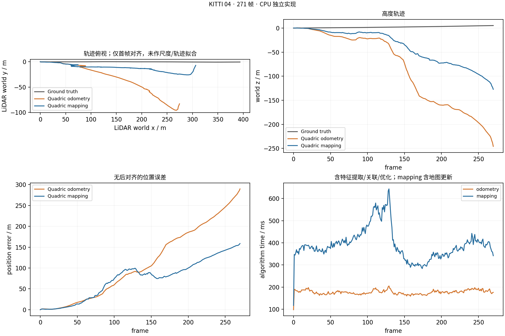
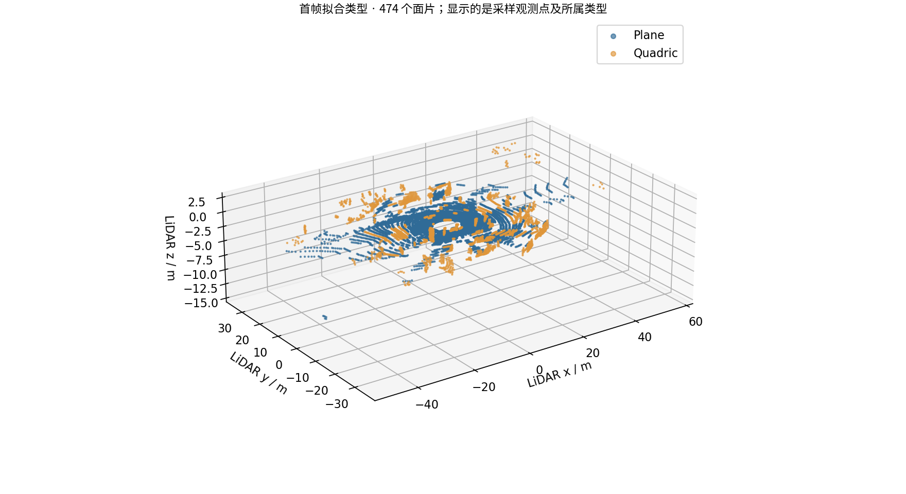
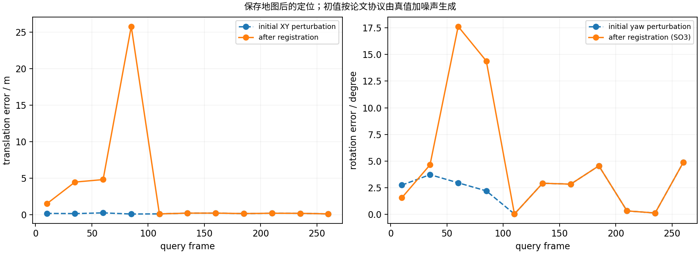

← 已有实验RA-L 2023 / arXiv:2304.14190
Quadric LiDAR：里程计、建图与定位
KITTI 04 · 271 帧 · 官方原始点云与真值 · 独立 CPU 实现
已跑通完整流程，精度尚未达到论文。默认版本包含明确列出的法向关联门限与鲁棒损失，不是作者代码。
| 模块 | 平移相对误差 ↓ | 旋转相对误差 ↓ | 中位耗时 |
|---|
| odometry | 52.813% | 20.518°/100m | 176.0 ms |
| mapping | 35.481% | 9.953°/100m | 381.5 ms |
用官方 KITTI 函数逐子段交叉验证；轨迹只对齐首帧，没有进行尺度或刚体后对齐。CPU耗时不能直接与作者实现比较。

二次曲面表示
面片保存隐式二次函数、均值和矩统计；增量更新不保留历史原始点云。蓝色为平面，橙色为一般二次曲面。

保存地图后的定位
初值按论文由真值加XY±0.2 m、yaw±5°扰动生成。里程计/建图不使用真值；定位结果另受估计地图漂移影响。

实现约定与差异
- 64-beam nominal HDL-64 ring projection, 2048 columns; extra 35-degree normal gate in range segmentation
- quadric fitting uses a Taubin generalized eigenproblem; sensor-specific noise model of ref [34] is not implemented
- PCA plane ratio, regularization, residual gates, sample budgets and LM stopping settings are explicit local choices
- patch association and optimization use deterministic point budgets rather than every source point
- default stability variant adds a 45-degree planar-normal association gate and Cauchy loss (scale 1); --literal disables both
- integer tuple spatial hashing instead of binary GeoHash; same 1.5m cell size and lowest-MSE collision rule
- no ROS, deskew/IMU fusion, loop closure, or official LOAM baseline; timings are Python/C++ reference on this CPU
完整报告 · 实测指标 · 参数与来源 · 逐帧数据 · 二次曲面地图
论文 · KITTI 官方评测